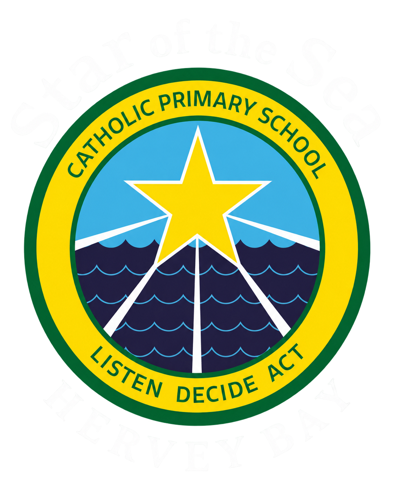

Planning aid, not a prescription. Start with what you are noticing. Choose a small number of strategies to trial, while protecting the knowledge or skill being taught. This prototype does not collect student names or personal information.

Notice a barrier. Choose a practical trial. Review what happens.